BANG! Karetní Hra
Toto je BANG!, legendární karetní hra ze světa divokého západu o přestřelkách, blafování a ničení přátelství.
Formulář
Základní pravidla
Příprava hry
Každý hráč obdrží náhodnou kartu Role (kterou drží v tajnosti, s výjimkou Šerifa) a kartu Postavy, která určuje jeho unikátní schopnost a počáteční počet životů (nábojů). Šerif si svou kartu role ihned otočí lícem nahoru a navíc získává život navíc k limitu své postavy.
Průběh tahu hráče
Hra probíhá po směru hodinových ručiček. Tah každého hráče se skládá ze 3 fází:
- Líznutí karet: Hráč si vezme 2 vrchní karty z dobíracího balíčku.
- Zahrání karet: Hráč může vyložit libovolný počet karet, kterými pomáhá sobě nebo škodí
ostatním. Platí však dvě klíčová omezení:
- Lze zahrát pouze 1 kartu BANG! za tah (pokud postava nebo karta neurčuje jinak).
- Před hráčem nesmí ležet dvě karty se stejným názvem.
- Odhození přebytečných karet: Na konci tahu nesmí mít hráč v ruce více karet, než kolik má právě zbývajících životů. Všechny karty navíc musí odhodit na odhazovací balíček.
Vzdálenost a dosah zbraní
Vzdálenost mezi dvěma hráči odpovídá nejkratšímu počtu míst u stolu (sousedé jsou ve vzdálenosti 1). V základu má každý hráč zbraň Colt .45 s dostřelem 1. Vyložením lepší zbraně si hráč zvyšuje svůj dosah. Karty jako Mustang vzdálenost od ostatních zvyšují, karty jako Appaloosa naopak vzdálenost ke všem ostatním snižují.
Eliminace a odměny / tresty
- Zabití Bandity: Kdokoliv zabije Banditu (i jiný Bandita), ihned si lízne 3 karty z balíčku jako odměnu za vypsanou odměnu.
- Zabití Pomocníka Šerifem: Pokud Šerif omylem zabije svého Pomocníka, za trest musí okamžitě odhodit všechny své karty z ruky i ze stolu!
Herní Role
Role určují cíl a způsob vítězství každého hráče. S výjimkou Šerifa nikdo nesmí svou roli odhalit!
Šerif (Sheriff)
Veřejná role (ukazuje se všem)Cíl: Zlikvidovat všechny Bandity a Odpadlíka, a nastolit tak v městečku zákon a pořádek.
Výhoda: Hraje vždy jako první a má po celou dobu hry o 1 život více než udává jeho postava.
Pomocník šerifa (Deputy)
Tajná roleCíl: Za každou cenu chránit Šerifa a pomoci mu eliminovat všechny Bandity i Odpadlíka.
Specifikum: Vítězí společně se Šerifem, a to i v případě, že během přestřelky sám padne.
Bandita (Outlaw)
Tajná roleCíl: Zastřelit Šerifa. Jakmile padne Šerif, Bandité okamžitě vyhrávají hru!
Specifikum: Bandité se navzájem neznají, ale mohou se dovtípit podle toho, po kom kdo střílí.
Odpadlík (Renegade)
Tajná roleCíl: Zůstat naživu jako úplně poslední hráč u stolu.
Specifikum: Nejtěžší role. Musí nejprve udržovat Šerifa naživu proti Banditům a nakonec Šerifa porazit v závěrečném duelu 1 na 1. Pokud Šerif zemře dřív, vyhrávají Bandité!
Postavy (16 pistolníků ze základní hry)
Každá postava má specifickou schopnost a stanovený počet životů (nábojů). Šerif si k tomuto počtu přičte +1.
Bart Cassidy
4 ❤️Kdykoliv je zraněn a ztratí život, okamžitě si lízne 1 kartu z dobíracího balíčku.
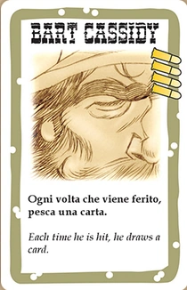
Black Jack
4 ❤️Ve fázi lízání ukáže druhou lízanou kartu všem. Je-li to srdce nebo káro, lízne si zdarma ještě třetí kartu.
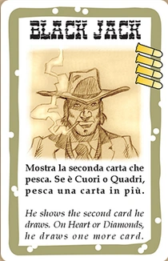
Calamity Janet
4 ❤️Může použít kartu BANG! jako Vedle! a kartu Vedle! jako BANG!.
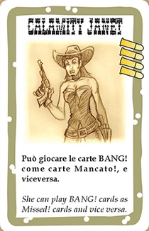
El Gringo
3 ❤️Kdykoliv je zraněn hráčem, vezme si náhodnou kartu přímo z ruky tohoto útočníka (za každý ztracený život 1 kartu).
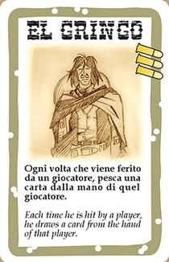
Jesse Jones
4 ❤️Ve fázi lízání si může první kartu líznout náhodně z ruky kteréhokoliv jiného hráče namísto z balíčku.
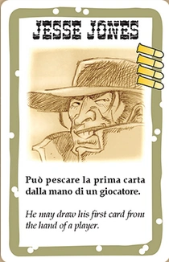
Jourdonnais
4 ❤️Má vestavěnou schopnost Barelu: kdykoliv na něj někdo zahraje BANG!, může si "lízat" – padne-li srdce, střele se vyhnul.
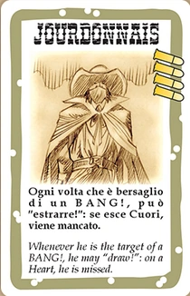
Kit Carlson
4 ❤️Během fáze lízání se podívá na 3 vrchní karty balíčku, 2 si vybere do ruky a 1 vrátí lícem dolů zpět na balíček.
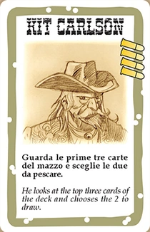
Lucky Duke
4 ❤️Kdykoliv si má "lízat" (např. při ověřování Barelu, Vězení nebo Dynamitu), otočí 2 karty a vybere si výsledek té, která mu vyhovuje.
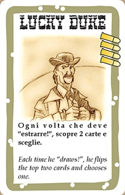
Paul Regret
3 ❤️Má vestavěnou schopnost Mustanga: všichni ostatní hráči ho vidí na vzdálenost o 1 větší.
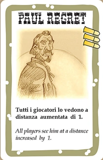
Pedro Ramirez
4 ❤️Při lízání si může první kartu vzít přímo z vršku odhazovacího balíčku namísto z dobíracího.
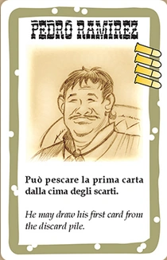
Rose Doolan
4 ❤️Má vestavěnou schopnost Appaloosy: vidí všechny ostatní hráče na vzdálenost o 1 menší.
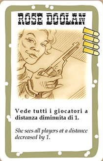
Sid Ketchum
4 ❤️Kdykoliv může odhodit 2 libovolné karty z ruky a okamžitě si tím vyléčit 1 život.
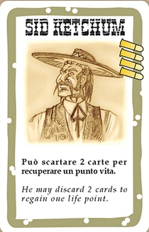
Slab the Killer
4 ❤️K odvrácení jeho karty BANG! musí napadený hráč zahrát současně dvě karty Vedle!.
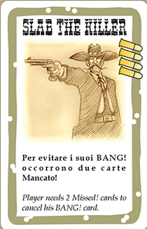
Suzy Lafayette
4 ❤️Jakmile nemá v ruce žádnou kartu, okamžitě si lízne 1 novou kartu z dobíracího balíčku.
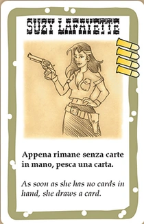
Vulture Sam
4 ❤️Kdykoliv je vyřazen jakýkoliv hráč, Sam si vezme do ruky všechny karty z jeho ruky i vyložené před ním.
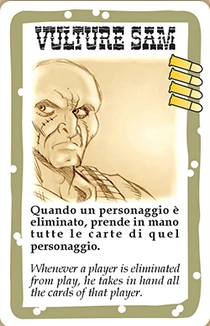
Willy the Kid
4 ❤️Může během svého tahu zahrát libovolný počet karet BANG!.
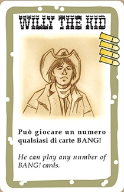
Herní Karty
V základní hře je celkem 80 hracích karet rozdělených podle barvy rámečku.
Hnědé karty (Okamžitý efekt)
Zahrají se z ruky, ihned se vyhodnotí jejich účinek a odloží se na odhazovací balíček:
- BANG! (25 ks): Základní útok na hráče v dostřelu. Hráč ztrácí život, pokud nezahraje Vedle!. Standardně max. 1 za tah.
- Vedle! / Missed! (12 ks): Okamžitě ruší účinek karty BANG! zahrané proti tobě.
- Pivo / Beer (6 ks): Vyléčí 1 ztracený život. Lze zahrát i mimo svůj tah v momentě, kdy dostaneš smrtící zásah. Nelze hrát, zbývají-li pouze 2 hráči.
- Salón / Saloon (1 ks): Každý hráč u stolu si okamžitě vyléčí 1 život.
- Panika! / Panic! (4 ks): Vezmi si 1 kartu (z ruky nebo ze stolu) od hráče na vzdálenost 1.
- Loupež / Cat Balou (4 ks): Donuť libovolného hráče (na jakoukoliv vzdálenost) odhodit 1 kartu ze stolu nebo z ruky.
- Dostavník / Stagecoach (2 ks): Okamžitě si lízni 2 karty z balíčku.
- Wells Fargo (1 ks): Okamžitě si lízni 3 karty z balíčku.
- Hokynářství / General Store (2 ks): Otočí se tolik karet, kolik je živých hráčů. Každý hráč si po směru hodinových ručiček vybere 1 kartu.
- Indiáni! / Indians! (2 ks): Všichni ostatní hráči musí odhodit kartu BANG!, jinak ztrácejí 1 život.
- Kulomet / Gatling (1 ks): Útok na všechny ostatní hráče. Každý se musí bránit kartou Vedle!, jinak ztrácí život. Nepočítá se do limitu 1 BANG! za tah!
- Duel (3 ks): Vyzvi libovolného hráče na souboj. Hráči střídavě odhazují kartu BANG!. Kdo jako první nemůže odhodit BANG!, ztrácí život.
Modré karty (Trvalé karty / Předměty)
Vykládají se před hráče na stůl. Zůstávají ve hře a poskytují výhodu, dokud nejsou odstraněny (např. kartou Panika! nebo Loupež):
- Zbraně: Určují dostřel tvých útoků. Hráč může mít vyloženou vždy pouze
jednu
zbraň (nová nahrazuje starou):
- Volcanic (2 ks): Dostřel 1, ale umožňuje zahrát neomezený počet karet BANG! za tah.
- Schofield (3 ks): Dostřel 2.
- Remington (1 ks): Dostřel 3.
- Rev. Carabine (1 ks): Dostřel 4.
- Winchester (1 ks): Dostřel 5.
- Mustang (3 ks): Všichni ostatní tě vidí na vzdálenost o 1 větší.
- Appaloosa (1 ks): Ty sám vidíš všechny ostatní hráče na vzdálenost o 1 menší.
- Barel / Barrel (2 ks): Kdykoliv na tebe míří BANG!, otočíš vrchní kartu balíčku. Pokud je to srdce, vyhnul ses zásahu (jako karta Vedle!).
- Vězení / Jail (3 ks): Lze zahrát na kteréhokoliv hráče (kromě Šerifa). Před svým tahem si vězeň "lízne" – padne-li srdce, utíká a hraje normálně. Jinak vynechává celý tah.
- Dynamit / Dynamite (1 ks): Položí se před tebe. Na začátku tvého tahu otočíš kartu z balíčku: pokud padne Pika 2 až 9, dynamit bouchne za 3 životy! Pokud ne, posouvá se k sousedovi po levici.
Strategie & Tipy ze hry
Pár praktických rad, jak neprohrát v prvních třech kolech a jak efektivně využívat karty.
Taktika podle rolí
- Šerif: Nestřílej bezhlavě do lidí hned od začátku. Když omylem sundáš Pomocníka, zahazuješ celou ruku i karty ze stolu. Priorita je co nejdřív vyložit Barel nebo Mustanga a držet si obranu.
- Pomocník (Deputy): Šerif musí přežít za každou cenu. Neútoč zbytečně na neznámé hráče, hledej Bandity a chraň Šerifa. Když v přestřelce padneš, ale Šerif vyhraje, máš výhru taky.
- Bandita: Jděte po Šerifovi hned, než se stihne opevnit. Když vidíš, že tvůj spolu-bandita stejně nepřežije další kolo, doraz ho klidně sám a shrábni 3 karty odměny.
- Odpadlík (Renegade): Nejtěžší pozice ve hře. Ze začátku pomáhej Šerifovi, aby ho Bandité nesmázli moc brzy. Postupně likviduj ostatní a nech si Šerifa na závěrečný duel 1 na 1.
Tipy a triky s kartami
- Volcanic a plná ruka BANGů: Nevykládej Volcanic na stůl zbytečně brzy, ať ti ho někdo nesebere Panikou. Počkej, až nasbíráš 3–4 karty BANG!, vylož ho a vystřílej cíl v jednom tahu.
- Kdy hrát Duel: Pošli Duel na hráče, který v předchozím tahu vyplácal BANGy na Indiány nebo má málo karet v ruce. Je skoro jistota, že ztratí život.
- Pivo v záloze: Pivo můžeš zahrát i mimo svůj tah jako záchranu před smrtící ránou na 0 životů. Nechávej si ho v ruce jako pojistku a nepij ho zbytečně, pokud nejsi nucen karty odhazovat.
- Dynamit a Lucky Duke: Lucky Duke si při ověřování líže 2 karty, takže je u něj šance na výbuch minimální. Pokud hraješ za něj, dynamit tě tolik neohrozí.
- Mustang + Barel: Nejoblíbenější defenzivní kombo. Zvyšuje vzdálenost od všech o 1 a Barel dává 25% šanci na bezplatné Vedle! z balíčku.